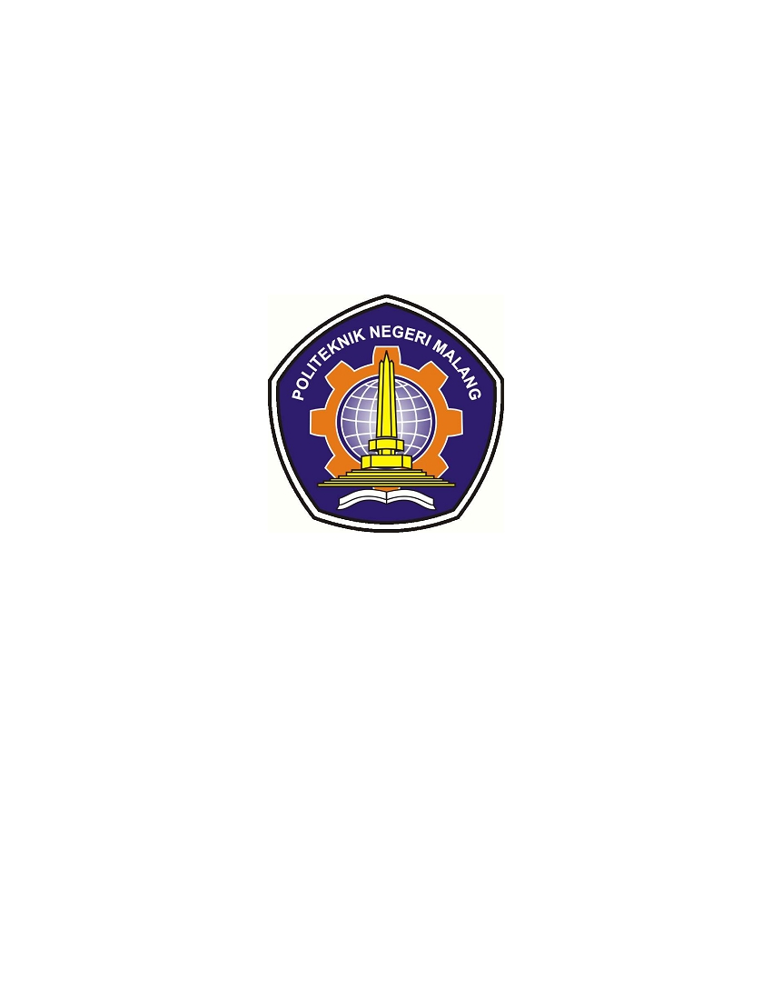
MANAJEMEN PROYEK
Tugas 1
Resume Bab 1 & Bab 2
Oleh :
Nama
: Rhezaldi Irnantyo Irawan
Kelas
: TI-2F
NIM
: 1841720164
PROGRAM STUDI TEKNIK INFORMATIKA
JURUSAN TEKNOLOGI INFORMASI
POLITEKNIK NEGERI MALANG

Bab 1
Pengantar Manajemen Proyek
Learning Objective
- Memahami kebutuhan yang berkembang untuk manajemen proyek yang lebih baik,
terutama untuk proyek teknologi informasi (TI)
- Jelaskan apa itu proyek, berikan contoh proyek TI, daftar berbagai atribut proyek, dan
menggambarkan tiga kendala proyek pengelolaan
- Jelaskan manajemen proyek dan bahas elemen-elemen kunci proyek kerangka kerja
manajemen, termasuk pemangku kepentingan proyek, proyek bidang pengetahuan
manajemen, alat dan teknik umum, dan keberhasilan proyek
- Diskusikan hubungan antara proyek, program, dan portofolio manajemen dan kontribusi
masing-masing untuk kesuksesan perusahaan
- Memahami peran manajer proyek dengan menjelaskan apa yang mereka lakukan,
keterampilan apa yang mereka butuhkan, dan peluang karier untuk manajer proyek TI
- Jelaskan profesi manajemen proyek, termasuk sejarahnya, peran organisasi profesional
seperti Manajemen Proyek Lembaga (PMI), pentingnya sertifikasi dan etika, dan
kemajuan perangkat lunak manajemen proyek
Introduction
- Banyak organisasi saat ini memiliki minat baru atau baru manajemen proyek
- Dunia secara keseluruhan menghabiskan hampir $ 10 triliun dari $ 40,7 triliun produk
bruto untuk semua jenis proyek
- Lebih dari 16 juta orang menganggap manajemen proyek sebagai milik mereka profesi
Project Management Statistics
Pada 2013 (tahun terakhir survei gaji PMI), rata-rata gaji dalam dolar AS untuk seseorang
dalam manajemen proyek profesi adalah $ 108.000 per tahun di Amerika Serikat; $ 134.658 pada
Australia, (negara dengan bayaran tertinggi); dan $ 24.201 di Mesir (negara dengan gaji
terendah). Di Indonesia, gaji Manajer Proyek TI adalah 20 - 50 juta per bulan (Survei 2013 oleh
Kelly). Keterampilan terbaik yang dicari majikan dalam lulusan perguruan tinggi baru semuanya
terkait dengan manajemen proyek: kerja tim, pengambilan keputusan, pemecahan masalah, dan
komunikasi verbal.
Motivation for Studying Information Technology (IT) Project Management
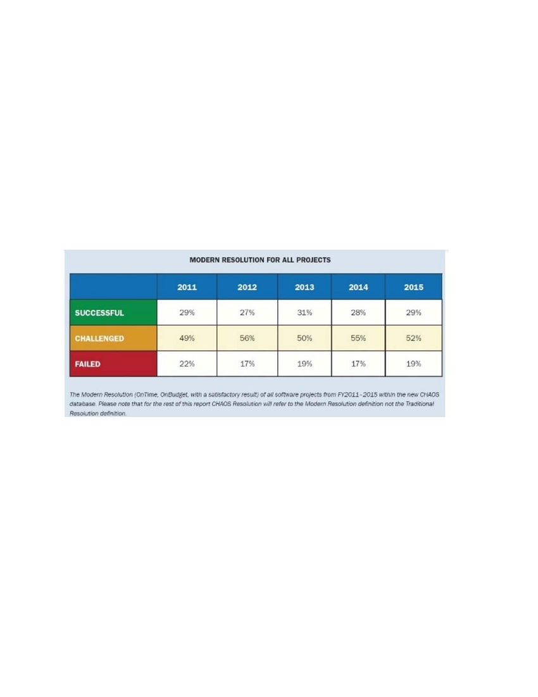
Proyek TI memiliki rekam jejak yang mengerikan, seperti yang dijelaskan dalam apa yang
Salah?
- Sebuah studi Standish Group 1995 (CHAOS) menemukan bahwa hanya 16,2% dari TI
proyek berhasil dalam memenuhi ruang lingkup, waktu, dan sasaran biaya; lebih 31%
dari proyek TI dibatalkan sebelum selesai
- Penelitian PricewaterhouseCoopers menemukan bahwa secara keseluruhan separuh dari
semua proyek gagal dan hanya 2,5% perusahaan yang secara konsisten memenuhi target
mereka ruang lingkup, waktu, dan sasaran biaya untuk semua jenis proyek.
The Chaos Report (Standish Group) in IT Project Survey
Reason for Project Failure
1. Buruknya disiplin proyek dan manajemen program
2. Kurangnya dukungan tingkat eksekutif
3. Tidak ada keterkaitan dengan strategi bisnis
4. Anggota tim yang salah
5. Tidak ada langkah-langkah untuk mengevaluasi keberhasilan proyek
6. Tidak ada manajemen risiko
7. Ketidakmampuan untuk mengelola perubahan
Advantages of Using Formal Project Management

1. Kontrol yang lebih baik atas sumber daya keuangan, fisik, dan manusia
2. Peningkatan hubungan pelanggan
3. Waktu pengembangan yang lebih singkat
4. Biaya lebih rendah
5. Kualitas lebih tinggi dan peningkatan keandalan
6. Margin laba yang lebih tinggi
7. Peningkatan produktivitas
8. Koordinasi internal yang lebih baik
9. Moral pekerja yang lebih tinggi
What is a Project ?
Sebuah proyek adalah “upaya sementara yang dilakukan untuk menciptakan produk, layanan,
atau hasil yang unik. Operasi adalah pekerjaan yang dilakukan untuk mempertahankan bisnis.
Proyek berakhir ketika tujuannya telah tercapai atau proyek telah dihentikan. Proyek dapat besar
atau kecil dan membutuhkan waktu singkat atau lama untuk lengkap.
Examples of IT Projects
1. Tim siswa membuat aplikasi ponsel cerdas dan menjualnya online
2. Perusahaan mengembangkan mobil tanpa pengemudi
3. Kelompok pemerintah mengembangkan sistem untuk melacak anak imunisasi
4. Bank global mengakuisisi lembaga keuangan lain dan perlu mengkonsolidasikan sistem
dan prosedur
Top Strategic Technologies
2012
- Komputasi di mana-mana
- Internet barang
- Pencetakan 3D
- Analisis lanjutan, luas, dan tidak terlihat
2018
- Cerdas: Yayasan AI, Aplikasi dan Analisis Cerdas, Hal Cerdas
- Digital: Kembar Digital, Cloud to the Edge, Platform Percakapan, Immersive
Pengalaman
- Mesh: Blockchain, Didorong oleh peristiwa, Risiko dan Kepercayaan Adaptif
Berkelanjutan

Media Snapshot: Unproductive Apps
- Gartner memperkirakan bahwa pada 2014, akan ada lebih dari 70 miliar unduhan
aplikasi seluler setiap tahun, tapi ternyata sudah hampir dua kali lipat
- Facebook sejauh ini merupakan aplikasi yang paling banyak diunduh, dan paling
banyak kategori populer dari semua aplikasi terus menjadi game
- Tantangannya adalah mengembangkan aplikasi yang berguna dan membuat pekerja
focus pada mereka bukannya banyak pilihan mengganggu yang tersedia
Project Attributes
Project
- Mempunyai tujuan yang unik
- Hanya sementara
- dikembangkan menggunakan elaborasi progresif
- membutuhkan sumber daya, seringkali dari berbagai bidang
- harus memiliki pelanggan utama atau sponsor
- melibatkan ketidakpastian
Project Stakeholders
- Stakeholder adalah orang-orang yang terlibat atau terpengaruh oleh proyek kegiatan
- Stakeholders include
Project and Program Managers
- Manajer proyek bekerja dengan sponsor proyek, tim proyek, dan orang lain yang
terlibat dalam proyek untuk memenuhi tujuan proyek
- Program : kelompok proyek terkait dikelola secara terkoordinasi cara untuk mendapatkan
manfaat dan kontrol yang tidak tersedia dari pengelolaan secara individual
- Manajer program mengawasi program; sering bertindak sebagai bos manajer proyek
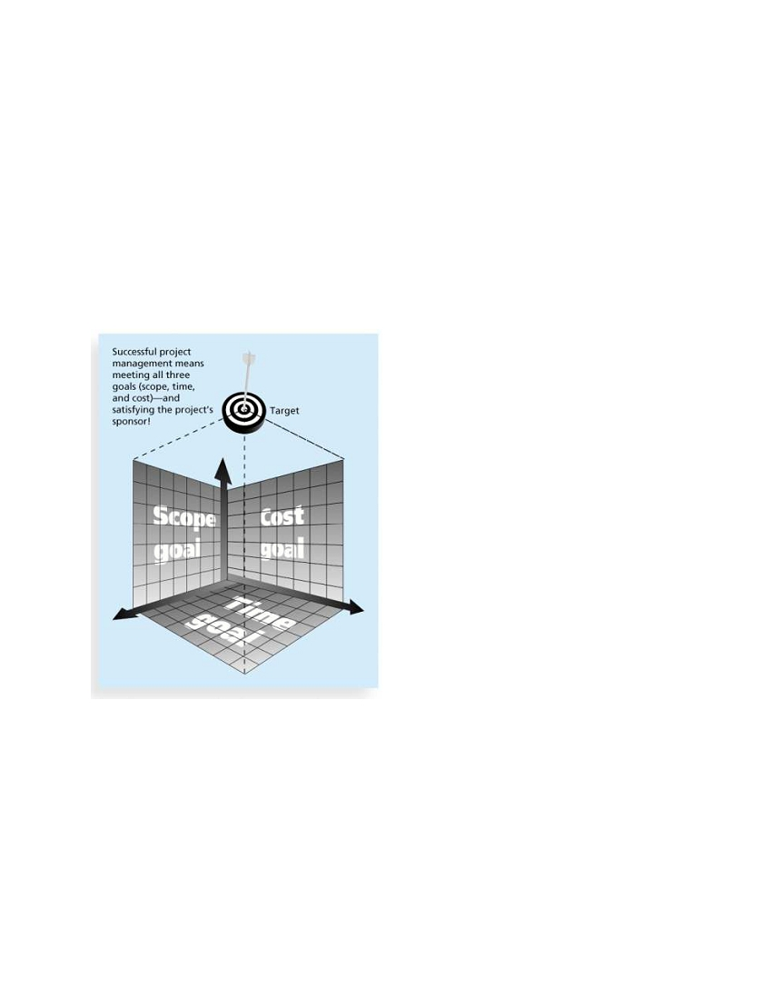
What is Project Management ?
- Manajemen proyek adalah "penerapan pengetahuan, keterampilan, alat dan teknik
untuk kegiatan proyek untuk memenuhi proyek Persyaratan"
- Manajer proyek berusaha untuk memenuhi tiga kendala (proyek ruang lingkup,
waktu, dan sasaran biaya) dan juga memfasilitasi keseluruhan proses untuk
memenuhi kebutuhan dan harapan para pemangku kepentingan proyek
Figure 1-1 The Triple Constraint of Project Management
Figure 1-2 Project Management Framework
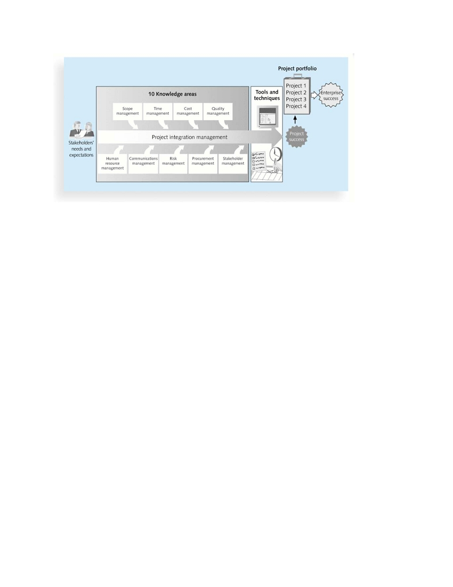
10 Project Management Knowledge Areas
Bidang pengetahuan menggambarkan kompetensi utama yang diproyeksikan manajer harus
berkembang
Manajer proyek harus memiliki pengetahuan dan keterampilan dalam semua 10 bidang
pengetahuan (integrasi proyek, ruang lingkup, waktu, biaya, kualitas, sumber daya manusia,
komunikasi, risiko, pengadaan, dan manajemen pemangku kepentingan)
Alat Manajemen Proyek dan Teknik
berbagai aspek proyek pengelolaan
1. Piagam proyek, pernyataan lingkup, dan WBS (lingkup)
2. Gantt chart, diagram jaringan, analisis jalur kritis, kritis penjadwalan berantai
(waktu)
3. Perkiraan biaya dan manajemen nilai yang didapat (biaya)
4. Lihat Tabel 1-1 untuk lebih banyak lagi
Super Tool
"Alat super" adalah alat yang memiliki penggunaan tinggi dan potensi tinggi untuk
meningkatkan keberhasilan proyek, seperti:

- Perangkat lunak untuk penjadwalan tugas (seperti perangkat lunak manajemen proyek)
- Pernyataan ruang lingkup
- Analisis persyaratan
- Laporan pelajaran yang dipelajari
Alat yang sudah banyak digunakan yang telah ditemukan untuk meningkatkan kepentingan
proyek termasuk:
- Laporan kemajuan
- Pertemuan awal
- Gantt chart
- Ubah permintaan
Apa yang Benar? Proyek yang ditingkatkan Performa
Studi CHAOS dari Standish Group menunjukkan peningkatan di bidang TI proyek dalam dekade
terakhir:
1. Jumlah proyek TI yang berhasil meningkat lebih dari dua kali lipat, dari 16 persen pada
1994 menjadi 39 persen pada 2012
2. Jumlah proyek yang gagal menurun dari 31 persen pada tahun 1994 menjadi 18 persen
pada 2012
3. Rates Tingkat keberhasilan jauh lebih tinggi untuk proyek kecil daripada yang besar - 76
persen berbanding 10 persen
Keberhasilan Proyek
Ada beberapa cara untuk mendefinisikan keberhasilan proyek:
- Proyek ini memenuhi ruang lingkup, waktu, dan sasaran biaya
- Proyek memuaskan pelanggan / sponsor
- Hasil proyek memenuhi tujuan utamanya, sepertimenghasilkan atau menyimpan sejumlah
uang, menyediakan pengembalian investasi yang baik, atau hanya membuat sponsor
senang
Table 1-2: What Helps Projects Succeed?
1. Dukungan eksekutif

2. Keterlibatan pengguna
3. Tujuan bisnis yang jelas
4. Kematangan emosi
5. Ruang lingkup optimalisasi
6. Proses tangkas
7. Keahlian manajemen proyek
8. Sumber daya terampil
9. Eksekusi
10. Alat dan infrastruktur
Top Three Reasons Why Federal Technology Project Succeed
- Pendanaan yang memadai
- Keahlian staf
- Keterlibatan dari semua pemangku kepentingan
What the Winners Do…
Temuan penelitian terbaru menunjukkan bahwa perusahaan yang unggul dalam proyek
kemampuan pengiriman:
- Gunakan kotak peralatan manajemen proyek terintegrasi (gunakan alat PM standar /
lanjutan, banyak templat)
- Tumbuhkan pemimpin proyek, dengan menekankan bisnis dan soft skill
- Mengembangkan proses pengiriman proyek yang efisien
- Ukur kesehatan proyek menggunakan metrik, seperti kepuasan pelanggan atau
pengembalian investasi
Program and Project Portfolio Management
- Suatu program adalah “sekelompok proyek terkait yang dikelola secara terkoordinasi
untuk mendapatkan manfaat dan kontrol yang tidak tersedia dari mengelolanya secara
individual ”
- Seorang manajer program memberikan kepemimpinan dan arahan untuk proyek tersebut
manajer memimpin proyek dalam program
- Contoh program umum di bidang TI termasuk infrastruktur, pengembangan aplikasi, dan
dukungan pengguna
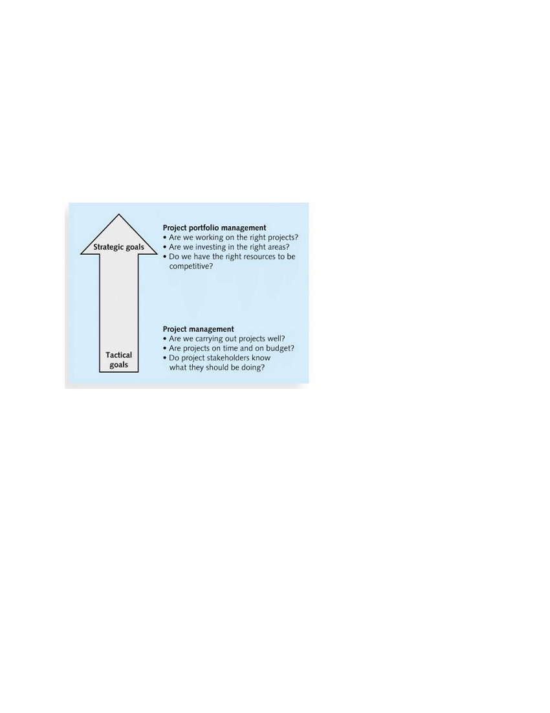
Project Portfolio Management
Sebagai bagian dari manajemen portofolio proyek, grup organisasi dan mengelola proyek dan
program sebagai portofolio investasi yang berkontribusi pada kesuksesan seluruh perusahaan.
Manajer portofolio membantu organisasi mereka menjadi bijaksana keputusan investasi dengan
membantu memilih dan menganalisis proyek dari perspektif strategis
Figure 1-3. Project Management Compared to Project Portfolio Management
Best Practice
Praktik terbaik adalah “cara optimal yang diakui oleh industri untuk mencapai tujuan atau
sasaran lain ”
Robert Butrick menyarankan bahwa organisasi perlu mengikuti dasar prinsip manajemen proyek,
termasuk dua yang disebutkan sebelumnya dalam bab ini:
- Pastikan proyek Anda didorong oleh strategi Anda. Mampu menunjukkan caranya setiap
proyek yang Anda lakukan sesuai dengan strategi bisnis Anda, dan menyaring yang tidak
diinginkan proyek sesegera mungkin
- Libatkan pemangku kepentingan Anda. Mengabaikan pemangku kepentingan sering
menyebabkan kegagalan proyek. Menjadi yakin untuk melibatkan pemangku kepentingan
di semua tahapan proyek, dan mendorong kerja tim dan komitmen setiap saat
Figure 1-4. Sample Project Portfolio Approach
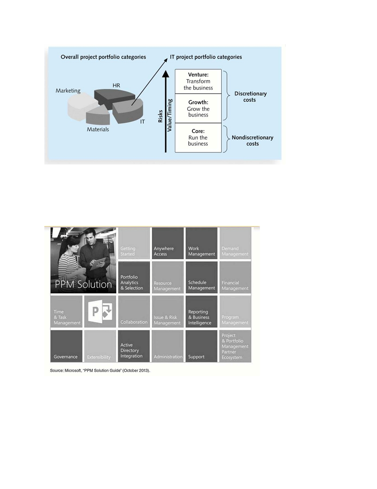
Figure 1-5. Microsoft project portfolio management capabilities

The Role of the Project Manager
- Deskripsi pekerjaan bervariasi, tetapi sebagian besar mencakup tanggung jawab seperti
perencanaan, penjadwalan, koordinasi, dan bekerja dengan orang untuk mencapai tujuan
proyek
- Ingatlah bahwa 97% dari proyek yang sukses dipimpin oleh manajer proyek
berpengalaman, yang sering dapat membantu mempengaruhi faktor kesuksesan
Suggested Skills for Project Managers
- Badan Pengetahuan Manajemen Proyek
- Pengetahuan, standar, dan peraturan bidang aplikasi
- Pengetahuan lingkungan proyek
- Pengetahuan dan keterampilan manajemen umum
- Keterampilan lunak atau keterampilan hubungan manusia
Table 1-3 Ten Most Important Skills and Competencies for Project Managers
1. Keterampilan orang
2. Kepemimpinan
3. Mendengarkan
4. Integritas, perilaku etis, konsisten
5. Kuat dalam membangun kepercayaan
6. Komunikasi verbal
7. Kuat dalam membangun tim
8. Resolusi konflik, manajemen konflik
9. Pemikiran kritis, pemecahan masalah
10. Memahami, menyeimbangkan prioritas
Different Skills Needed in Different Situations
- Proyek besar: Kepemimpinan, pengalaman sebelumnya yang relevan, perencanaan,
orang-orang keterampilan, komunikasi verbal, dan keterampilan membangun tim paling
banyak penting
- Proyek dengan ketidakpastian tinggi: Manajemen risiko, ekspektasi keterampilan
manajemen, kepemimpinan, orang-orang, dan perencanaan paling banyak penting
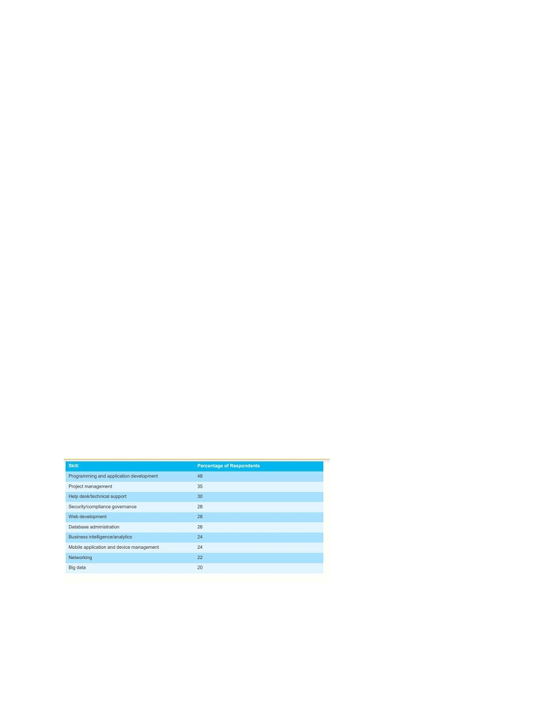
- Proyek yang sangat baru: Kepemimpinan, keterampilan masyarakat, memiliki visi dan
tujuan, kepercayaan diri, manajemen harapan, dan keterampilan mendengarkan yang
terpenting
Importance of Leadership Skills
- Manajer proyek yang efektif memberikan kepemimpinan dengan contoh
- Seorang pemimpin fokus pada tujuan jangka panjang dan tujuan gambaran besar sambil
menginspirasi orang untuk mencapai tujuan tersebut
- Seorang manajer menangani rincian rapat sehari-hari yang spesifik tujuan
- Manajer proyek sering mengambil peran sebagai pemimpin dan Pengelola
Careers for IT Project Managers
- Dalam sebuah survei 2014, eksekutif TI mendaftar "sepuluh keterampilan terpanas"
mereka direncanakan untuk menyewa pada tahun 2015
- Manajemen proyek menempati urutan kedua setelah pemrograman dan pengembangan
aplikasi
- Bahkan jika Anda memilih untuk tetap dalam peran teknis, Anda masih perlu
pengetahuan dan keterampilan manajemen proyek untuk membantu tim Anda dan
organisasi
Table 1-4. Ten Hottest IT Skills

13 Hottest IT Skills in 2018 by Forbes
- Pengalaman dengan AI
- Keterampilan Untuk Membayangkan, Merancang, dan Mengembangkan Aplikasi AR
- Bakat Sains Data
- Pengembangan Aplikasi Seluler
- Keunggulan Dalam Keamanan Siber
- Bakat Untuk SaaS Di Awan
- Kemampuan Beradaptasi Dengan Teknologi Baru
- Pengalaman Coding dan Teknik
- Pembelajaran Mesin Terapan
- Pengetahuan Pemrograman
- Keterampilan Apa Saja Yang Terkait Dengan Analisis
- Fungsi dan Komunikasi Lintas Tim
- Transformasi Digital
The Project Management Profession
- Profesi manajemen proyek berkembang dengan sangat cepat kecepatan
- Sangat membantu untuk memahami sejarah lapangan, peran masyarakat profesional
seperti Institut Manajemen Proyek, dan pertumbuhan perangkat lunak manajemen proyek
History of Project Management
Beberapa orang berpendapat bahwa membangun piramida Mesir adalah proyek, seperti sedang
membangun Tembok Besar Cina. Sebagian besar orang menganggap Proyek Manhattan sebagai
yang pertama proyek untuk menggunakan manajemen proyek "modern", Proyek tiga tahun, $ 2
miliar (dalam dolar 1946) ini memiliki proyek terpisah manajer proyek dan manajer teknis
Figure 1-6. Sample Gantt Chart Created with Project 2013
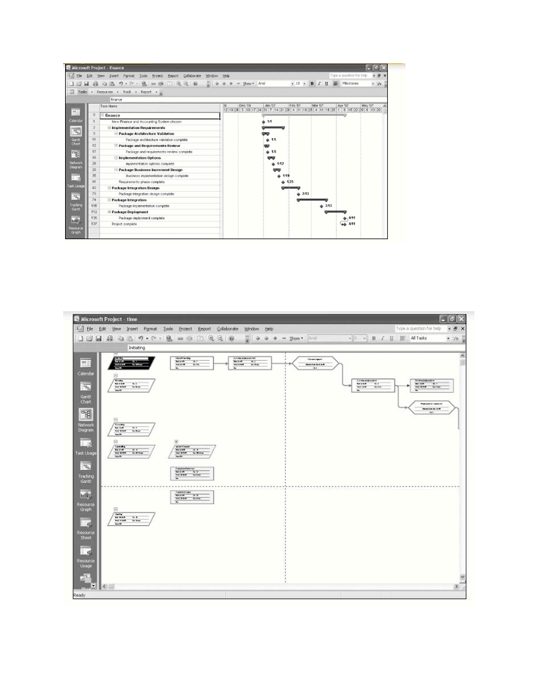
Figure 1-7. Sample Network Diagram Created with Project 2013
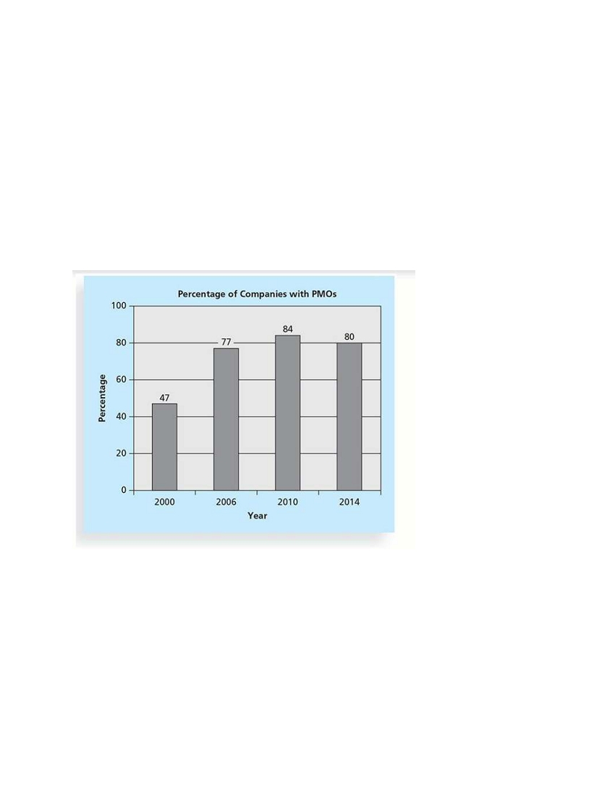
Project Management Offices
- Pada 100-an, banyak perusahaan mulai membuat PMO untuk membantu mereka
menangani meningkatnya jumlah dan kompleksitas proyek
- Kantor Manajemen Proyek (PMO) adalah kelompok organisasi bertanggung jawab untuk
mengoordinasikan fungsi manajemen proyek di seluruh organisasi
Figure 1-8. Growth in the Number of Project Management Offices
Global Issues
Beberapa dinamika global memaksa organisasi untuk memikirkan kembali praktik:
- Development Pengembangan bakat untuk manajer proyek dan program adalah perhatian
utama
- Manajemen portofolio proyek yang baik sangat penting dalam hal ketat kondisi
perekonomian
- Techniques Teknik manajemen proyek dasar adalah kompetensi inti
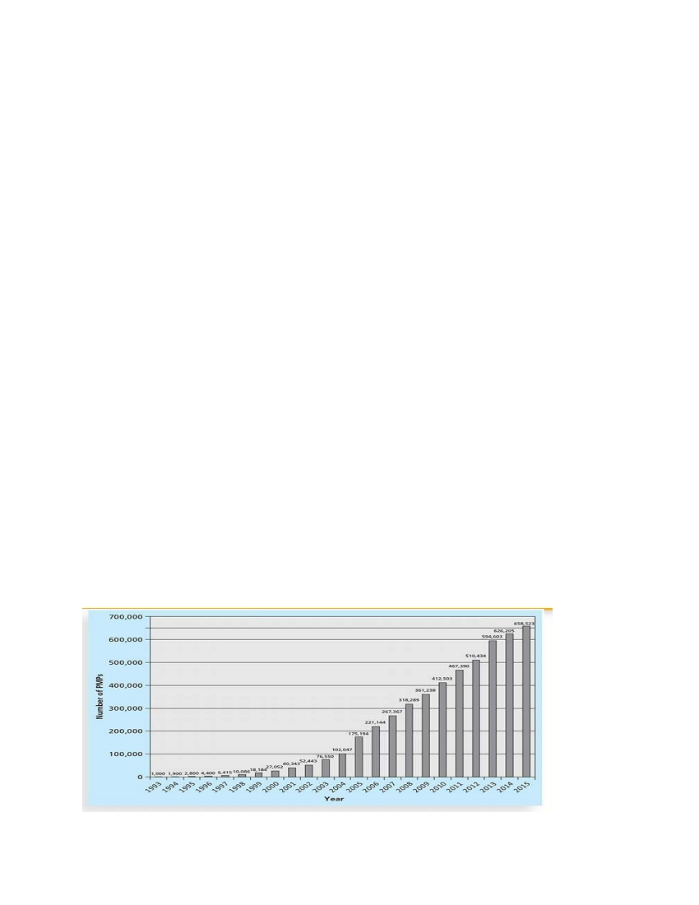
- Organisasi ingin menggunakan pendekatan yang lebih gesit untuk memproyeksikan
pengelolaan
- Realization Realisasi manfaat proyek adalah metrik utama
The Project Management Institute
- Lembaga Manajemen Proyek (PMI) adalah seorang profesional internasional masyarakat
untuk manajer proyek yang didirikan pada tahun 1969
- PMI terus menarik dan mempertahankan anggota, melaporkan lebih dari 449.000 anggota
di seluruh dunia pada akhir 2014
- Ada komunitas praktik di banyak bidang, seperti informasi sistem, layanan keuangan, dan
perawatan kesehatan
- Program penelitian dan sertifikasi manajemen proyek terus berlanjut tumbuh
- Siswa dapat bergabung dengan PMI dengan biaya lebih murah dan mendapatkan
Associate Tersertifikasi dalam sertifikasi Manajemen Proyek (CAPM) (lihat
www.pmi.org untuk detail)
Project Management Certification
- PMI memberikan sertifikasi sebagai Profesional Manajemen Proyek (PMP)
- PMP telah mendokumentasikan pengalaman proyek yang cukup, disepakati ikuti kode
etik, dan lulus ujian PMP
- Jumlah orang yang mendapatkan sertifikasi PMP meningkat segera
Figure 1-9 Growth in PMP Certification, 1993-2014

Ethics in Project Management
- Etika, yang didefinisikan secara longgar, adalah seperangkat prinsip yang memandu
keputusan kita membuat berdasarkan pada nilai-nilai pribadi dari apa yang "benar" dan
"salah"
- Manajer proyek sering menghadapi dilema etika
- Untuk mendapatkan sertifikasi PMP, pelamar harus menyetujui PMI Kode Etik dan
Perilaku Profesional
- Beberapa pertanyaan tentang ujian PMP terkait dengan professional tanggung jawab,
termasuk etika
Project Management Software
Ada ratusan produk yang berbeda untuk membantu dalam melakukan manajemen proyek
Tiga kategori utama alat:
1. Alat kelas bawah: Menangani proyek tunggal atau lebih kecil dengan baik, biaya kurang
$ 200 per pengguna
2. Alat midrange: Menangani beberapa proyek dan pengguna, biaya $ 200- $ 1.000 per
pengguna, Project 2013 paling populer
3. Tools Alat canggih: Disebut juga manajemen proyek perusahaan perangkat lunak, sering
dilisensikan berdasarkan per pengguna
Beberapa alat gratis atau sumber terbuka juga tersedia
Chapter Summary
- Sebuah proyek adalah upaya sementara yang dilakukan untuk menciptakan produk yang
unik, layanan, atau hasil
- Manajemen proyek adalah penerapan pengetahuan, keterampilan, alat, dan teknik untuk
kegiatan proyek untuk memenuhi persyaratan proyek
- Program adalah sekelompok proyek terkait yang dikelola secara terkoordinasi
- Manajemen portofolio proyek melibatkan pengorganisasian dan pengelolaan proyek dan
program sebagai portofolio investasi
- Manajer proyek memainkan peran penting dalam membantu proyek dan organisasi
berhasil
- Profesi manajemen proyek terus tumbuh dan matang

Bab 2
Konteks Manajemen Proyek dan Teknologi Informasi
Tujuan Pembelajaran, Bagian 1
pada proyek teknologi informasi (TI)
organisasi
puncak sangat penting untuk keberhasilan proyek
Tujuan Pembelajaran, Bagian 2
pengembangan proyek dan pengembangan produk
globalisasi, outsourcing, tim virtual, dan manajemen proyek yang gesit
Proyek Tidak Dapat Dijalankan di Isolasi
Mengambil pandangan holistik untuk melaksanakan proyek dalam konteks organisasi
Pandangan Sistem tentang Manajemen Proyek
analitis terhadap manajemen dan penyelesaian masalah
- Filosofi sistem : model keseluruhan untuk memikirkan hal-hal sebagai sistem
- Analisis sistem : pendekatan penyelesaian masalah
- Manajemen sistem : alamat masalah bisnis, teknologi, dan organisasi sebelum
membuat perubahan pada system
Figure 2-1. Three Sphere Model for Systems Management
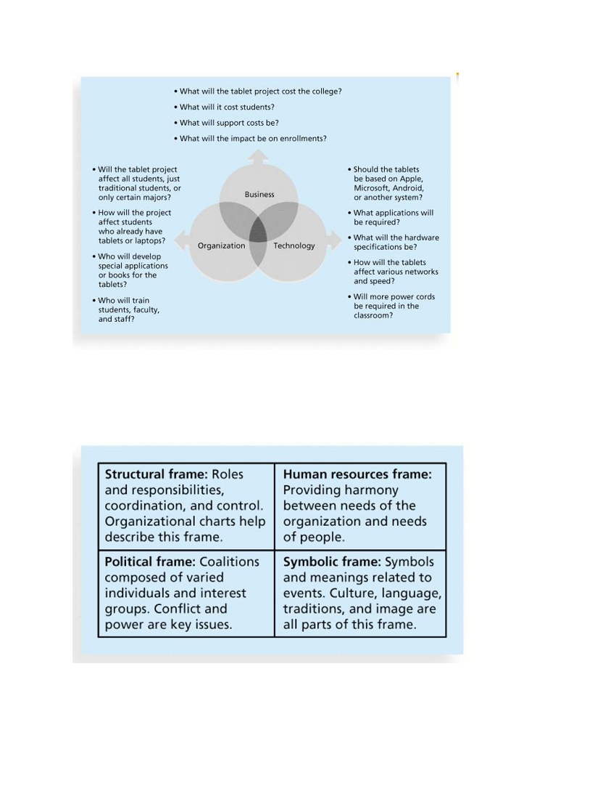
Figure 2-2. Perspectives on Organizations
Organizational Structures
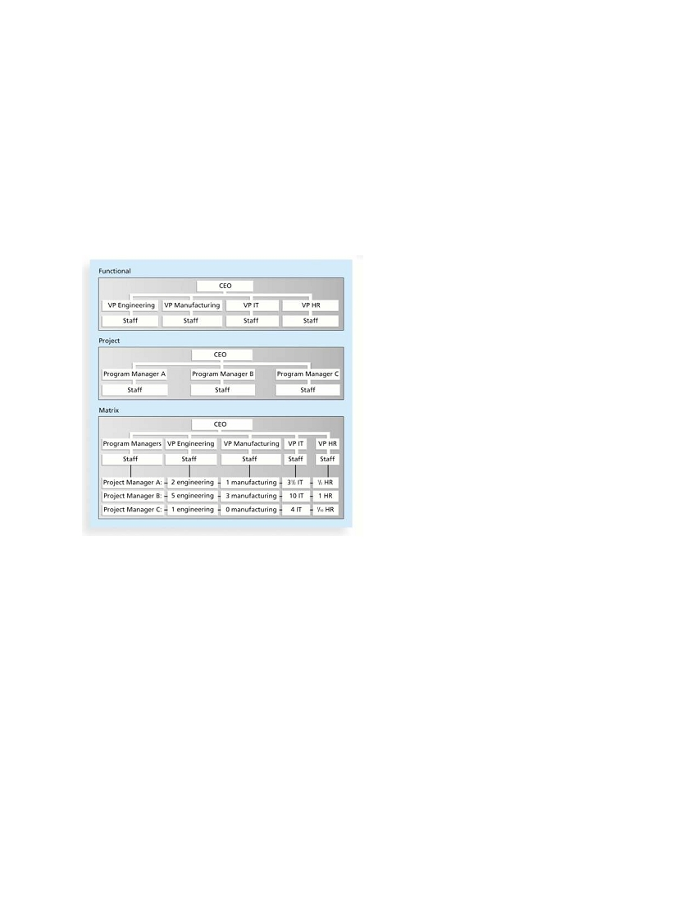
- Functional : functional managers report to the CEO
- Project : program managers report to the CEO
- Matrix : middle ground between functional and project structures; personnel often
report to two or more bosses; structure can be weak, balanced, or strong matrix
Figure 2-3. Functional, Project, and Matrix Organizational Structures
Table 2-1. Organizational Structure Influences on Projects
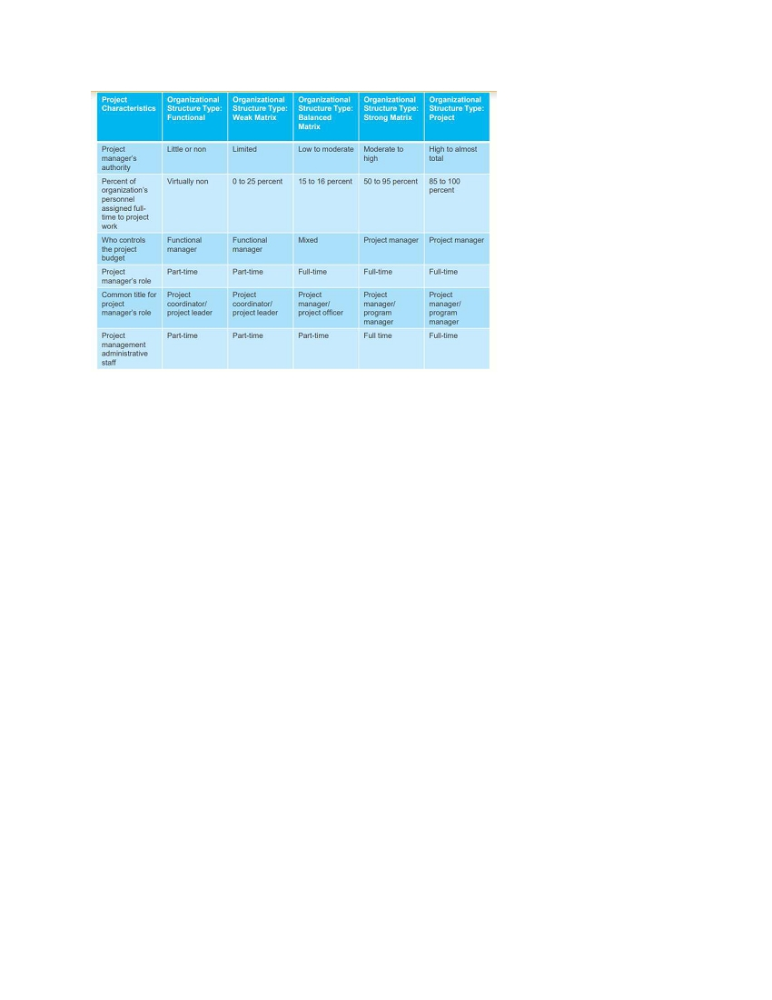
Budaya organisasi
ciri fungsi sebuah organisasi.Banyak ahli percaya bahwa penyebab mendasar dari banyak
masalah perusahaan bukanlah struktur atau staf, tetapi budaya
Sepuluh Karakteristik Budaya Organisasi
* Pekerjaan proyek paling berhasil dalam budaya organisasi di mana barang-barang ini
kuat / tinggi dan barang-barang lainnya seimbang.
Manajemen pemangku kepentingan
mengelola hubungan dengan semua pemangku kepentingan proyek
harapan pemangku kepentingan

Cuplikan Media
bencana situs web health.gov pada Oktober 2013
Aturan Manajemen Proyek”
organisasi untuk membantu memperbaiki situs
Pentingnya Komitmen Manajemen Puncak
proyek
adalah tingkat komitmen dan dukungan yang mereka terima dari manajemen puncak
pendukung utama proyek.
Bagaimana Manajemen Puncak Dapat Membantu Manajer Proyek
Praktek terbaik
organisasi, termasuk infrastruktur TI, penggunaan TI, dan manajemen proyek
proyek TI yang dipublikasikan dengan baik di Australia (Sydney Water's sistem
manajemen hubungan pelanggan, sistem manajemen akademik Royal Melbourne
Institute of Technology, dan sistem penagihan One.Tel)
Perlunya Komitmen Organisasi terhadap Teknologi Informasi (TI)
berhasil
proyek-proyek TI
komitmen
Kebutuhan akan Standar Organisasi
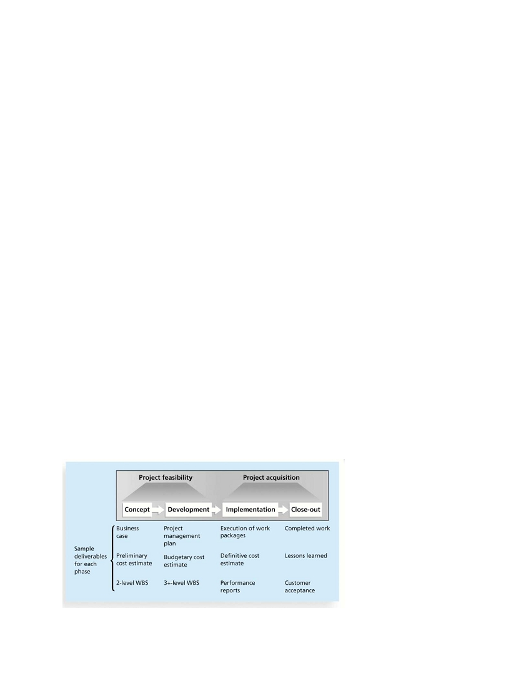
- Penggunaan formulir standar dan perangkat lunak untuk manajemen proyek
- Pengembangan dan penggunaan pedoman untuk menulis rencana proyek atau
memberikan informasi status
- Pembentukan kantor manajemen proyek atau pusat keunggulan
Fase Proyek dan Siklus Hidup Proyek
bagian dari proyek
Lebih lanjut tentang Fase Proyek
- kebutuhan sumber daya biasanya terendah
- tingkat ketidakpastian (risiko) tertinggi
- pemangku kepentingan proyek memiliki peluang terbesar untuk mempengaruhi
proyek
- kepastian penyelesaian sebuah proyek meningkat
- diperlukan lebih banyak sumber daya
- memastikan bahwa persyaratan proyek dipenuhi
- sponsor menyetujui penyelesaian proyek
Figure 2-4. Phases of the Traditional Project Life Cycle
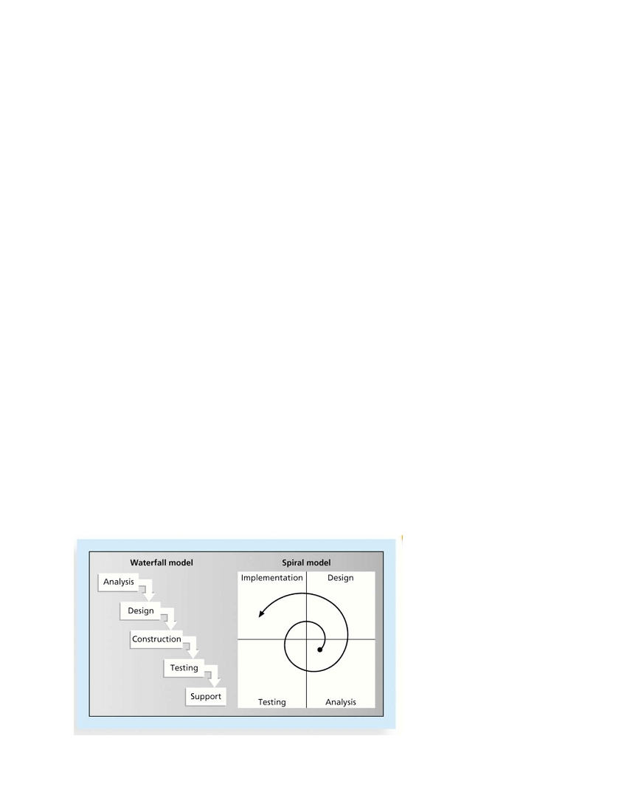
Siklus Hidup Produk
menggambarkan fase yang terlibat dalam pengembangan dan pemeliharaan sistem
informasi
- Siklus hidup prediktif : ruang lingkup proyek dapat diartikulasikan dengan jelas
dan jadwal dan biaya dapat diprediksi
- Daur hidup Adaptive Software Development (ASD) : persyaratan tidak dapat
dinyatakan dengan jelas, proyek digerakkan oleh misi dan berbasis komponen,
menggunakan siklus berbasis waktu untuk memenuhi tanggal target
Model Siklus Hidup Prediktif
dengan baik
pendekatan iteratif atau spiral daripada pendekatan linier
operasional
persyaratan pengguna
dengan cepat tanpa mengorbankan kualitas
Figure 2-5. Waterfall and Spiral Life Cycle Models

Pengembangan Perangkat Lunak Agile
baru yang berfokus pada kolaborasi erat antara tim pemrograman dan pakar bisnis
Pentingnya Fase Proyek dan Tinjauan Manajemen
berikutnya
setiap fase untuk mengevaluasi kemajuan proyek, kemungkinan berhasil, dan
melanjutkan kompatibilitas dengan tujuan organisasi
Konteks Proyek TI
dihasilkan, area aplikasi, dan persyaratan sumber daya
satu bidang teknologi, orang harus sangat terspesialisasi
Tren Terbaru yang Mempengaruhi Manajemen Proyek TI
atau sumber dari sumber luar. Offshoring kadang-kadang digunakan untuk
menggambarkan outsourcing dari negara lain
waktu menggunakan teknologi komunikasi
Isu-isu Penting dan Saran Terkait dengan Globalisasi
- Komunikasi
- Kepercayaan
- Praktek kerja umum
- Alat-alat
- Gunakan disiplin proyek yang lebih besar
- Berpikir global tetapi bertindak lokal
- Lanjutkan momentum proyek
- Gunakan alat dan teknologi baru

Pengalihdayaan
seperti menemukan cara untuk mengurangi biaya
outsourcing dengan meningkatkan arsitektur perusahaan mereka untuk memastikan
bahwa infrastruktur TI dan proses bisnis terintegrasi dan terstandarisasi (Lihat Saran
Bacaan)
outsourcing lainnya
Isu global
produk-produk manufaktur di China, tetapi ada masalah besar di sana setelah peluncuran
iPhone 4S pada Januari 2012 yang menyebabkan perselisihan antara pekerja migran yang
disewa oleh calo untuk mengantre membeli telepon.
orang-orang menyerang penjaga keamanan. Toko Apple Beijing telah memiliki masalah
sebelumnya. Pada Mei 2011, empat orang terluka ketika kerumunan orang yang
menunggu untuk membeli iPad 2 menjadi jelek.
Keuntungan Tim Virtual
24/7
dukungan di luar kantor pusat mereka.
seluruh dunia bekerja kapan saja, siang atau malam hari
kantor tetap dan kebutuhan untuk bepergian ke tempat kerja.
Kerugian Tim Virtual
informal
tim , kepercayaan / hubungan, gaya kepemimpinan, dan pemilihan anggota tim
Manajemen Proyek Agile

bahwa manajemen proyek, seperti yang mereka lihat digunakan, tidak memungkinkan
orang untuk bekerja dengan cepat atau mudah.
sebagaimana didefinisikan sebelumnya dalam bab ini. Ketika teknologi dan bisnis
menjadi lebih kompleks, pendekatan ini seringkali sulit digunakan karena persyaratan
tidak diketahui atau terus berubah.
dan tambahan, di mana persyaratan dan solusi berkembang melalui kolaborasi.
Manifesto untuk Pengembangan Perangkat Lunak Agile
mengembangkan dan menyetujui Manifesto untuk Pengembangan Perangkat Lunak
Agile, sebagai berikut:
dengan melakukannya dan membantu orang lain melakukannya. Melalui pekerjaan ini
kami mendapat nilai:
Scrum
menyelesaikan proyek dengan lingkup kerja yang kompleks dan inovatif.
membandingkan tim lintas fungsi yang berkinerja tinggi dengan pembentukan scrum
yang digunakan oleh tim rugby.
Figure 2-6. Scrum Framework
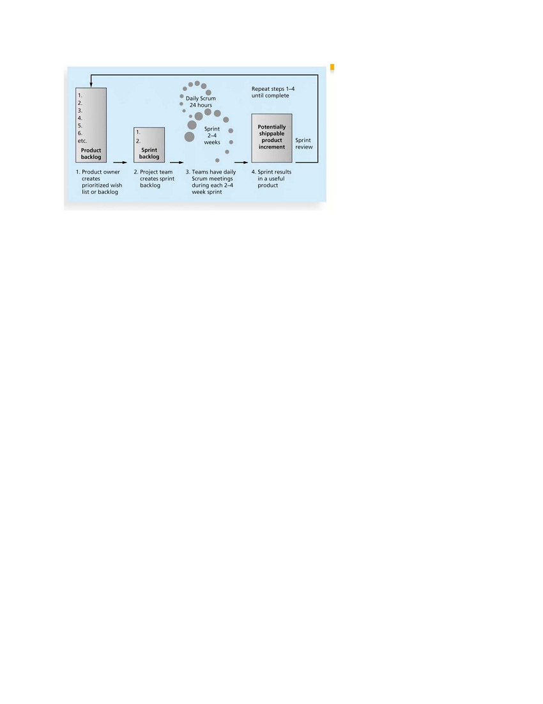
Kanban
selesai
Agile, Panduan PMBOK®, dan Sertifikasi Baru
mengelola proyek.
memperkenalkan sertifikasi baru pada 2011 yang disebut Agile Certified Praktitioner
(ACP).
menyesuaikan cara mereka menjalankan proyek, tetapi manajemen proyek tidak mudah,
bahkan ketika menggunakan Agile.
Ringkasan Bab
dan simbolik
teknologi informasi
tim virtual, dan Agile